Chapter 32 — Vault of Ironforge
Rambleon Birdsong · November 21, 2026 · 5h 57m in Azeroth
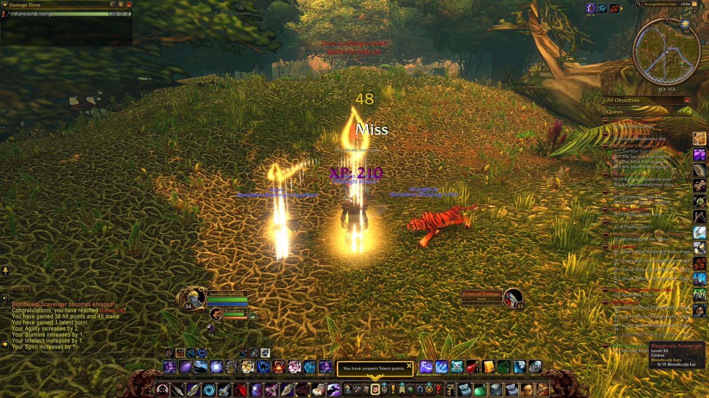
10:06 AM — Reached Level 34 in Stranglethorn Vale
5h 57m in Azeroth tonight.
1 level.
7 quests.
69 places.
99 enemies slain.
1 deaths.
Travelled with Sellaura.
Ramble on.
7Quests
69Places
99Enemies slain
11Loot
1Deaths
1People
43,729XP
16Lines of roleplay
Quests
| Quest | Turned in at | Lv |
|---|
| Stranglethorn Vale |
|---|
| Tiger Mastery | Nesingwary's Expedition | 33 |
| Some Assembly Required | Booty Bay | 33 |
| Panther Mastery | Nesingwary's Expedition | 34 |
| Special Forces | Rebel Camp | 34 |
| Hostile Takeover | The Salty Sailor Tavern | 34 |
| Stormwind City |
|---|
| A Green Sample | The Park | 34 |
| Duskwood |
|---|
| An Unfortunate End | | 34 |
| Quest | Picked up at |
|---|
| Tiger Mastery | Nesingwary's Expedition |
| Excelsior | Booty Bay |
| Panther Mastery | Nesingwary's Expedition |
| Shady Saltseers | The Salty Sailor Tavern |
| The Saltseer Captain | The Salty Sailor Tavern |
| Colonel Kurzen | Rebel Camp |
| Quest | Picked up at | Since |
|---|
| Sathrah's Sacrifice | Temple of the Moon | Chapter 3 |
| Crown of the Earth | Dolanaar | Chapter 5 |
| The Forgotten Heirloom | The Jansen Stead | Chapter 8 |
| Save Techbot's Brain! | Tinker Town | Chapter 9 |
| The Day After | Tinker Town | Chapter 9 |
| Westfall Stew | Westfall | Chapter 11 |
| Lost in the Thicket Things | Menethil Harbor | Chapter 16 |
| Essential Artificials | Tinker Town | Chapter 16 |
| Data Rescue | Tinker Town | Chapter 17 |
| The Grand Betrayal | Tinker Town | Chapter 17 |
| Shared Fury | Forest Song | Chapter 19 |
| The Tower of Althalaxx | Darkshore | Chapter 19 |
| Horrors in the Highland | The Green Belt | Chapter 20 |
| The Thandol Span | Dun Modr | Chapter 20 |
| A Grim Task | Dun Modr | Chapter 20 |
| The Dark Iron War | Dun Modr | Chapter 20 |
| Death to the Dragonmaw | Wetlands | Chapter 20 |
| Defeat Nek'rosh | Angerfang Encampment | Chapter 20 |
| Syndicate Assassins | Southshore Town Hall | Chapter 21 |
| Insane Druids | Forest Song | Chapter 22 |
| Talk of the Town | Southshore | Chapter 22 |
| Soothing Turtle Bisque | Southshore | Chapter 22 |
| The Color of Blood | Old Town | Chapter 22 |
| Bring Back a Bang | Dun Modr | Chapter 23 |
| Bartolo's Yeti Fur Cloak | Southshore | Chapter 23 |
| Slowing the Orc Advance | Silverwind Refuge | Chapter 25 |
| Crushridge Bounty | Southshore | Chapter 25 |
| Hints of a New Plague? | Southshore | Chapter 25 |
| An Alarming Request | Southshore Town Hall | Chapter 25 |
| Costly Menace | Southshore | Chapter 25 |
| Reclaimers' Business in Desolace | Hall of Explorers | Chapter 25 |
| Ironband Wants You! | The Library | Chapter 25 |
| Crashing the Wickerman Festival | Southshore | Chapter 28 |
| Stonegear's Search | Hall of Arms | Chapter 28 |
| Darkspear Islands Clash | Hall of Arms | Chapter 28 |
| Raptor Mastery | Nesingwary's Expedition | Chapter 31 |
| The Cook in the Cage | Kurzen's Compound | Chapter 31 |
| Kurzen's Mystery | Rebel Camp | Chapter 31 |
| Favor for Krazek | The Salty Sailor Tavern | Chapter 31 |
As far as Rambleon knows: a quest picked up before it was installed, or abandoned before it recorded that, is not here.
Scenes
10:22 AMA scene in Tkashi Ruins with Divine Paloma and Misspsycho Val
Divine Paloma “thank you”
Rambleon Birdsong “np”
Misspsycho Val “ew a night elf”
8:37 PMOverheard in The Canals: Metal Hedva, Pogs Feral and Tylune Lifebloom
Metal Hedva yells “Any rogues want a tip? |cnIQ2:|Hitem:4636::::::::40:1484:::::::::|h[Strong Iron Lockbox]|h|r”
Pogs Feral yells “ill give you a tip”
Tylune Lifebloom yells “CAN SOMEONE CURE DISEASE ME PLS”
9:46 PMA scene in Gnomeregan, alone
Rambleon Birdsong “sry did not see u there”
The Journey
374 moments, in order · fold
- 8:09 AM — Began the adventure
- 8:09 AM — Entered The Salty Sailor Tavern (Stranglethorn Vale)
- 8:10 AM — Entered Booty Bay (Stranglethorn Vale)
- 8:12 AM — Entered The Cape of Stranglethorn (Stranglethorn Vale)
- 8:16 AM — Entered Gurubashi Arena (Stranglethorn Vale)
- 8:16 AM — Entered Ruins of Jubuwal (Stranglethorn Vale)
- 8:17 AM — Entered Gurubashi Arena (Stranglethorn Vale)
- 8:17 AM — Entered The Cape of Stranglethorn (Stranglethorn Vale)
- 8:18 AM — Entered Stranglethorn Vale
- 8:21 AM — Entered Venture Co. Base Camp (Stranglethorn Vale)
- 8:21 AM — Discovered Venture Co. Base Camp
- 8:21 AM — Discovered Venture Co. Base Camp
- 8:21 AM — Entered Stranglethorn Vale
- 8:22 AM — First Venture Co. Geologist slain
- 8:22 AM — Entered Venture Co. Base Camp (Stranglethorn Vale)
- 8:33 AM — Entered Venture Co. Operations Center (Stranglethorn Vale)
- 8:33 AM — Discovered Venture Co. Operations Center
- 8:33 AM — Entered Venture Co. Base Camp (Stranglethorn Vale)
- 8:39 AM — Entered Venture Co. Operations Center (Stranglethorn Vale)
- 8:40 AM — First Snapjaw Crocolisk slain
- 8:40 AM — Entered Lake Nazferiti (Stranglethorn Vale)
- 8:43 AM — Entered Stranglethorn Vale
- 8:44 AM — First Stranglethorn Tiger slain
- 8:44 AM — Entered Lake Nazferiti (Stranglethorn Vale)
- 8:46 AM — Entered Venture Co. Base Camp (Stranglethorn Vale)
- 8:46 AM — Entered Venture Co. Operations Center (Stranglethorn Vale)
- 8:47 AM — Entered Venture Co. Base Camp (Stranglethorn Vale)
- 8:53 AM — Entered Lake Nazferiti (Stranglethorn Vale)
- 9:01 AM — Entered Venture Co. Operations Center (Stranglethorn Vale)
- 9:01 AM — Entered Venture Co. Base Camp (Stranglethorn Vale)
- 9:04 AM — Entered Lake Nazferiti (Stranglethorn Vale)
- 9:05 AM — Entered Stranglethorn Vale
- 9:05 AM — Entered Lake Nazferiti (Stranglethorn Vale)
- 9:06 AM — Entered Venture Co. Operations Center (Stranglethorn Vale)
- 9:06 AM — Entered Venture Co. Base Camp (Stranglethorn Vale)
- 9:09 AM — Entered Lake Nazferiti (Stranglethorn Vale)
- 9:10 AM — 5/5 Snapjaw Crocolisk Skin — "Some Assembly Required"
- 9:11 AM — Entered Venture Co. Base Camp (Stranglethorn Vale)
- 9:14 AM — Entered Stranglethorn Vale
- 9:15 AM — Entered Venture Co. Base Camp (Stranglethorn Vale)
- 9:15 AM — Entered Stranglethorn Vale
- 9:15 AM — Entered Venture Co. Base Camp (Stranglethorn Vale)
- 9:16 AM — Entered Stranglethorn Vale
- 9:20 AM — 10/10 Stranglethorn Tiger slain — "Tiger Mastery"
- 9:20 AM — Entered Venture Co. Base Camp (Stranglethorn Vale)
- 9:21 AM — Entered Venture Co. Operations Center (Stranglethorn Vale)
- 9:21 AM — Entered Lake Nazferiti (Stranglethorn Vale)
- 9:22 AM — Entered Stranglethorn Vale
- 9:22 AM — Entered Nesingwary's Expedition (Stranglethorn Vale)
- 9:22 AM — Completed "Tiger Mastery"
- 9:22 AM — Accepted "Tiger Mastery"
- 9:23 AM — Hearthed home to Booty Bay
- 9:23 AM — Entered The Salty Sailor Tavern (Stranglethorn Vale)
- 9:23 AM — Entered Booty Bay (Stranglethorn Vale)
- 9:23 AM — Entered The Salty Sailor Tavern (Stranglethorn Vale)
- 9:24 AM — Entered Booty Bay (Stranglethorn Vale)
- 9:24 AM — Completed "Some Assembly Required"
- 9:24 AM — Accepted "Excelsior"
- 9:24 AM — Entered The Salty Sailor Tavern (Stranglethorn Vale)
- 9:39 AM — Entered The Salty Sailor Tavern (Stranglethorn Vale)
- 9:39 AM — Entered Booty Bay (Stranglethorn Vale)
- 9:40 AM — Entered The Salty Sailor Tavern (Stranglethorn Vale)
- 9:40 AM — Entered Booty Bay (Stranglethorn Vale)
- 9:40 AM — Looted Ghostwalker Crown of Arcane Wrath (Uncommon)
- 9:42 AM — Entered The Cape of Stranglethorn (Stranglethorn Vale)
- 9:45 AM — Entered Gurubashi Arena (Stranglethorn Vale)
- 9:45 AM — Entered Ruins of Jubuwal (Stranglethorn Vale)
- 9:46 AM — Entered Gurubashi Arena (Stranglethorn Vale)
- 9:46 AM — Entered The Cape of Stranglethorn (Stranglethorn Vale)
- 9:47 AM — Entered Stranglethorn Vale
- 9:52 AM — Entered Rebel Camp (Stranglethorn Vale)
- 9:52 AM — Entered Stranglethorn Vale
- 9:54 AM — Entered Nesingwary's Expedition (Stranglethorn Vale)
- 9:55 AM — Entered Stranglethorn Vale
- 9:56 AM — First Young Stranglethorn Tiger slain
- 9:57 AM — First Stranglethorn Tiger slain
- 9:57 AM — First Panther slain
- 9:59 AM — Discovered Bal'lal Ruins
- 9:59 AM — Discovered Bal'lal Ruins
- 9:59 AM — Entered Bal'lal Ruins (Stranglethorn Vale)
- 10:00 AM — 1/1 The First Troll Legend — "Kurzen's Mystery"
- 10:00 AM — Entered Stranglethorn Vale
- 10:05 AM — First Bloodscalp Scavenger slain
- 10:05 AM — Reached Level 34
- 10:06 AM — Learned |cff71d5ff|Hspell:19577:0|h[Intimidation]|h|r
- 10:06 AM — Learned Intimidation
- 10:08 AM — Looted Insignia Leggings (Uncommon)
- 10:17 AM — 10/10 Panther slain — "Panther Mastery"
- 10:22 AM — Entered Tkashi Ruins (Stranglethorn Vale)
- 10:22 AM — A scene in Tkashi Ruins with Divine Paloma and Misspsycho Val (3 lines)
- 10:22 AM — First Elder Stranglethorn Tiger slain
- 10:23 AM — Entered Nesingwary's Expedition (Stranglethorn Vale)
- 10:23 AM — Completed "Panther Mastery"
- 10:23 AM — Accepted "Panther Mastery"
- 10:24 AM — Entered Stranglethorn Vale
- 10:25 AM — Entered Lake Nazferiti (Stranglethorn Vale)
- 10:25 AM — Entered Stranglethorn Vale
- 10:26 AM — First Kurzen Jungle Fighter slain
- 10:27 AM — Entered Kurzen's Compound (Stranglethorn Vale)
- 10:29 AM — First Crystal Spine Basilisk slain
- 10:30 AM — Entered Stranglethorn Vale
- 10:30 AM — Entered Kurzen's Compound (Stranglethorn Vale)
- 10:33 AM — Hearthed home to Booty Bay
- 10:33 AM — Entered The Salty Sailor Tavern (Stranglethorn Vale)
- 10:47 AM — Accepted "Shady Saltseers"
- 10:47 AM — Abandoned "Brewer's Trade"
- 10:47 AM — Accepted "The Saltseer Captain"
- 10:47 AM — Entered Booty Bay (Stranglethorn Vale)
- 10:49 AM — Flew from Booty Bay to Stormwind, Elwynn
- 10:49 AM — Entered Janeiro's Point (Stranglethorn Vale)
- 10:49 AM — Entered Southern Savage Coast (Stranglethorn Vale)
- 10:50 AM — Entered Bloodsail Compound (Stranglethorn Vale)
- 10:50 AM — Entered Southern Savage Coast (Stranglethorn Vale)
- 10:50 AM — Entered The Vile Reef (Stranglethorn Vale)
- 10:50 AM — Entered The Savage Coast (Stranglethorn Vale)
- 10:51 AM — Entered Bal'lal Ruins (Stranglethorn Vale)
- 10:51 AM — Entered Stranglethorn Vale
- 10:51 AM — Entered Duskwood
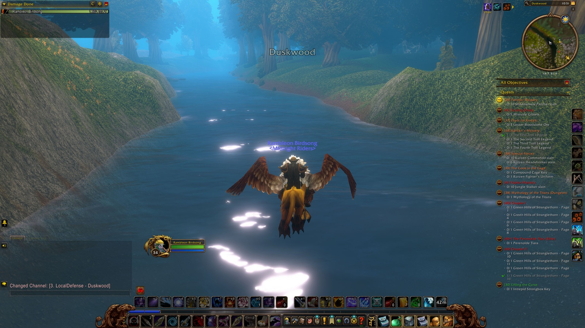
10:51 AM — Entered Duskwood- 10:51 AM — Entered The Hushed Bank (Duskwood)
- 10:52 AM — Entered The Darkened Bank (Duskwood)
- 10:52 AM — Entered Westfall
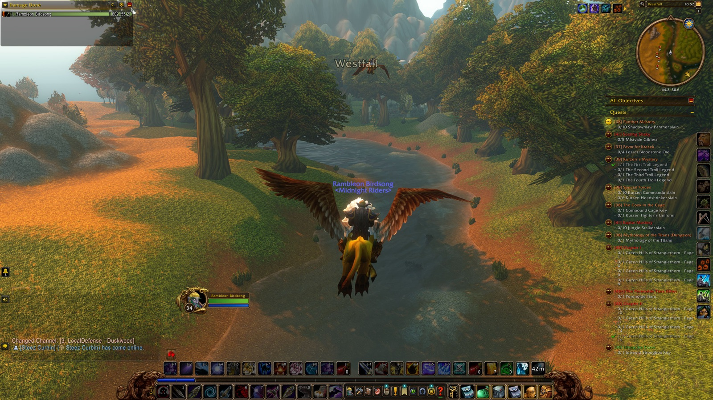
10:52 AM — Entered Westfall- 10:52 AM — Entered Forest's Edge (Elwynn Forest)
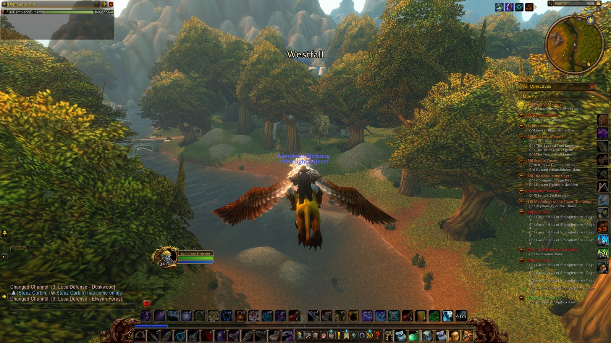
10:52 AM — Entered Elwynn Forest- 10:52 AM — Entered Westfall
- 10:52 AM — Entered Forest's Edge (Elwynn Forest)
- 10:52 AM — Entered Elwynn Forest
- 10:52 AM — Entered Mirror Lake Orchard (Elwynn Forest)
- 10:52 AM — Entered Mirror Lake (Elwynn Forest)
- 10:52 AM — Entered Elwynn Forest
- 10:52 AM — Entered Valley of Heroes (Stormwind City)
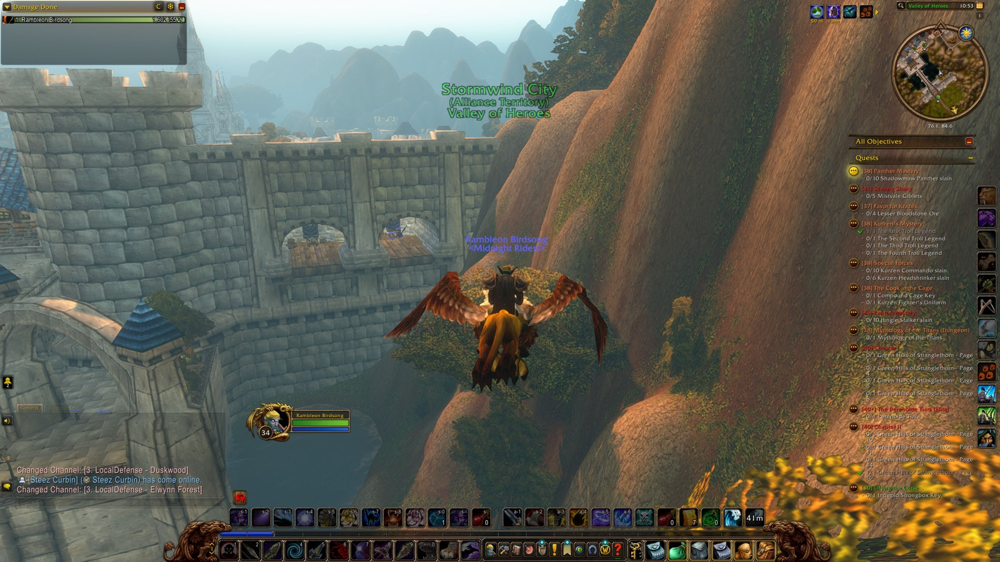
10:53 AM — Entered Stormwind City- 10:53 AM — Entered Trade District (Stormwind City)
- 11:01 AM — Entered The Canals (Stormwind City)
- 11:01 AM — Entered Dwarven District (Stormwind City)
- 12:42 PM — Entered Dwarven District (Stormwind City)
- 12:43 PM — Learned |cff71d5ff|Hspell:14263:0|h[Raptor Strike (Rank 5)]|h|r
- 12:43 PM — Learned Raptor Strike
- 12:43 PM — Learned |cff71d5ff|Hspell:14272:0|h[Disengage (Rank 2)]|h|r
- 12:43 PM — Learned Disengage
- 12:43 PM — Learned Explosive Trap
- 12:43 PM — Learned Serpent Sting
- 12:45 PM — Entered The Canals (Stormwind City)
- 12:45 PM — Entered Old Town (Stormwind City)
- 12:45 PM — Entered The Canals (Stormwind City)
- 12:46 PM — Entered Trade District (Stormwind City)
- 8:30 PM — Entered Trade District (Stormwind City)
- 8:33 PM — Entered The Canals (Stormwind City)
- 8:34 PM — Entered The Park (Stormwind City)
- 8:35 PM — Looted Vine Pruner's Cloak (Uncommon)
- 8:35 PM — Completed "A Green Sample"
- 8:36 PM — Entered The Canals (Stormwind City)
- 8:36 PM — Entered Cathedral Square (Stormwind City)
- 8:37 PM — Entered The Canals (Stormwind City)
- 8:37 PM — Overheard in The Canals: Metal Hedva, Pogs Feral and Tylune Lifebloom (3 lines)
- 8:41 PM — Entered Trade District (Stormwind City)
- 8:45 PM — Flew from Trade District to Darkshire, Duskwood
- 8:45 PM — Entered Valley of Heroes (Stormwind City)
- 8:45 PM — Entered Elwynn Forest
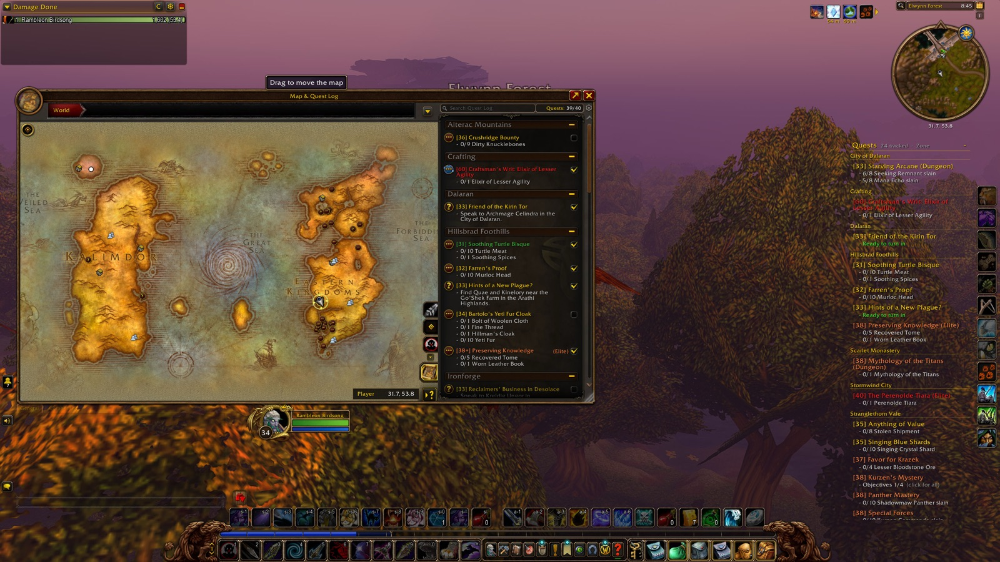
8:45 PM — Entered Elwynn Forest- 8:45 PM — Entered Mirror Lake (Elwynn Forest)
- 8:45 PM — Entered Elwynn Forest
- 8:46 PM — Entered Fargodeep Mine (Elwynn Forest)
- 8:46 PM — Entered The Darkened Bank (Duskwood)
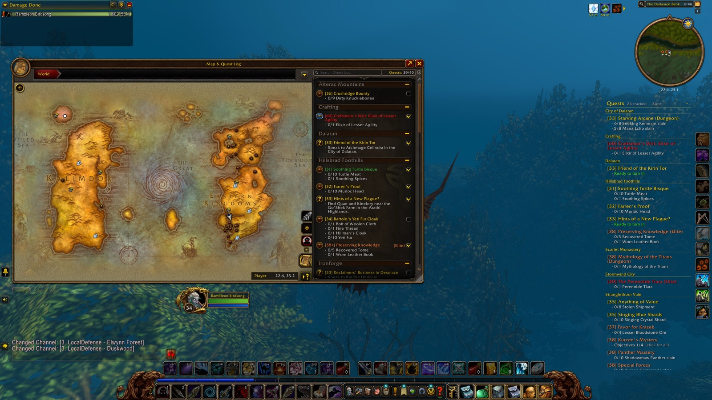
8:46 PM — Entered Duskwood- 8:46 PM — Entered Raven Hill Cemetery (Duskwood)
- 8:46 PM — Entered Duskwood
- 8:47 PM — Entered Brightwood Grove (Duskwood)
- 8:47 PM — Entered Darkshire (Duskwood)
- 8:49 PM — Entered Duskwood
- 8:51 PM — Completed "An Unfortunate End"
- 8:51 PM — Looted Night Watchman's Torch (Uncommon)
- 8:51 PM — Entered Stranglethorn Vale
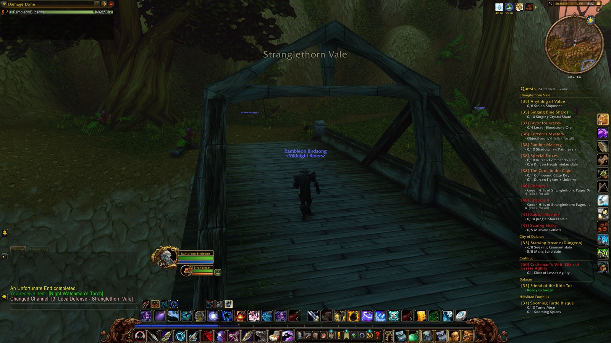
8:52 PM — Entered Stranglethorn Vale- 8:53 PM — Entered Kurzen's Compound (Stranglethorn Vale)
- 8:54 PM — First Kurzen Jungle Fighter slain
- 8:54 PM — First Kurzen Medicine Man slain
- 8:55 PM — First Kurzen Commando slain
- 8:56 PM — Looted Pattern: Thick Murloc Armor (Uncommon)
- 8:57 PM — 1/1 Green Hills of Stranglethorn - Page 21 — "Chapter III"
- 8:57 PM — Entered The Stockpile (Stranglethorn Vale)
- 8:57 PM — Discovered The Stockpile
- 8:57 PM — Joined forces with Sellaura (Druid)
- 8:57 PM — First Kurzen Headshrinker slain
- 8:58 PM — Entered Kurzen's Compound (Stranglethorn Vale)
- 8:58 PM — Parted ways with Sellaura
- 8:58 PM — Entered The Stockpile (Stranglethorn Vale)
- 9:00 PM — Entered Kurzen's Compound (Stranglethorn Vale)
- 9:00 PM — Entered The Stockpile (Stranglethorn Vale)
- 9:02 PM — 10/10 Kurzen Commando slain — "Special Forces"
- 9:04 PM — 6/6 Kurzen Headshrinker slain — "Special Forces"
- 9:04 PM — Entered Kurzen's Compound (Stranglethorn Vale)
- 9:05 PM — Entered Stranglethorn Vale
- 9:06 PM — Entered Rebel Camp (Stranglethorn Vale)
- 9:06 PM — Completed "Special Forces"
- 9:06 PM — Accepted "Colonel Kurzen"
- 9:07 PM — Entered Stranglethorn Vale
- 9:08 PM — Entered Lake Nazferiti (Stranglethorn Vale)
- 9:09 PM — Entered Stranglethorn Vale
- 9:09 PM — Entered Lake Nazferiti (Stranglethorn Vale)
- 9:09 PM — First Snapjaw Crocolisk slain
- 9:10 PM — Entered Venture Co. Base Camp (Stranglethorn Vale)
- 9:10 PM — Entered Lake Nazferiti (Stranglethorn Vale)
- 9:10 PM — Entered Venture Co. Operations Center (Stranglethorn Vale)
- 9:10 PM — First Venture Co. Mechanic slain
- 9:11 PM — First Venture Co. Geologist slain
- 9:12 PM — Looted Archer's Gloves of the Boar (Uncommon)
- 9:13 PM — Entered Venture Co. Base Camp (Stranglethorn Vale)
- 9:13 PM — Entered Venture Co. Operations Center (Stranglethorn Vale)
- 9:13 PM — Entered Venture Co. Base Camp (Stranglethorn Vale)
- 9:14 PM — Slain by Venture Co. Shredder in Venture Co. Base Camp
- 9:15 PM — Entered Stranglethorn Vale
- 9:15 PM — Entered Lake Nazferiti (Stranglethorn Vale)
- 9:15 PM — Entered Venture Co. Operations Center (Stranglethorn Vale)
- 9:16 PM — Entered Lake Nazferiti (Stranglethorn Vale)
- 9:16 PM — Entered Venture Co. Base Camp (Stranglethorn Vale)
- 9:16 PM — Back among the living
- 9:19 PM — 8/8 Tumbled Crystal — "Hostile Takeover"
- 9:23 PM — Hearthed home to Booty Bay
- 9:23 PM — Entered The Salty Sailor Tavern (Stranglethorn Vale)
- 9:23 PM — Looted Gemmed Gloves (Uncommon)
- 9:23 PM — Completed "Hostile Takeover"
- 9:23 PM — Entered Booty Bay (Stranglethorn Vale)
- 9:26 PM — Entered The Salty Sailor Tavern (Stranglethorn Vale)
- 9:26 PM — Entered Booty Bay (Stranglethorn Vale)
- 9:27 PM — Flew from Booty Bay to Ironforge, Dun Morogh
- 9:27 PM — Entered Janeiro's Point (Stranglethorn Vale)
- 9:27 PM — Entered Southern Savage Coast (Stranglethorn Vale)
- 9:27 PM — Entered Bloodsail Compound (Stranglethorn Vale)
- 9:27 PM — Entered Southern Savage Coast (Stranglethorn Vale)
- 9:28 PM — Entered The Vile Reef (Stranglethorn Vale)
- 9:28 PM — Entered The Savage Coast (Stranglethorn Vale)
- 9:28 PM — Entered Bal'lal Ruins (Stranglethorn Vale)
- 9:28 PM — Entered Stranglethorn Vale
- 9:29 PM — Entered Duskwood
- 9:29 PM — Entered The Hushed Bank (Duskwood)
- 9:29 PM — Entered The Darkened Bank (Duskwood)
- 9:29 PM — Entered Westfall
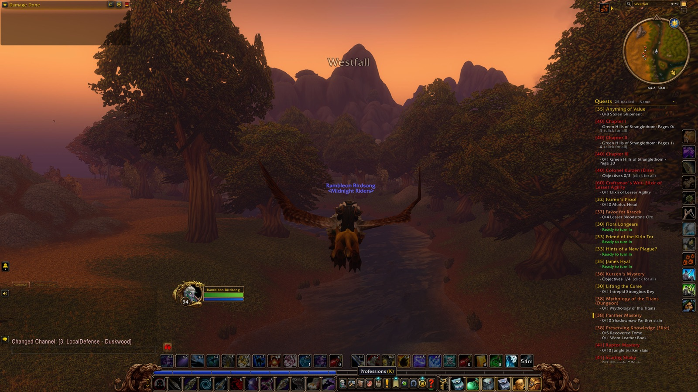
9:29 PM — Entered Westfall- 9:29 PM — Entered Forest's Edge (Elwynn Forest)
- 9:29 PM — Entered Westfall
- 9:30 PM — Entered Forest's Edge (Elwynn Forest)
- 9:30 PM — Entered Elwynn Forest
- 9:30 PM — Entered Mirror Lake Orchard (Elwynn Forest)
- 9:30 PM — Entered Mirror Lake (Elwynn Forest)
- 9:30 PM — Entered Elwynn Forest
- 9:30 PM — Entered Valley of Heroes (Stormwind City)
- 9:30 PM — Entered Elwynn Forest
- 9:31 PM — Entered Crystal Lake (Elwynn Forest)
- 9:31 PM — Entered Northshire Vineyards (Elwynn Forest)
- 9:31 PM — Entered Northshire Valley (Elwynn Forest)
- 9:31 PM — Entered Elwynn Forest
- 9:31 PM — Entered Burning Steppes
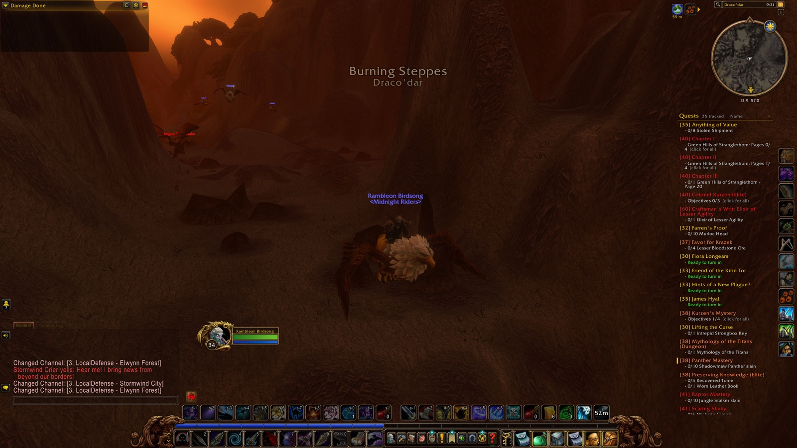
9:31 PM — Entered Burning Steppes- 9:31 PM — Entered Draco'dar (Burning Steppes)
- 9:32 PM — Entered Blackrock Mountain (Burning Steppes)
- 9:32 PM — Entered Burning Steppes
- 9:32 PM — Entered Blackrock Stronghold (Burning Steppes)
- 9:32 PM — Entered Burning Steppes
- 9:32 PM — Entered The Sea of Cinders (Searing Gorge)
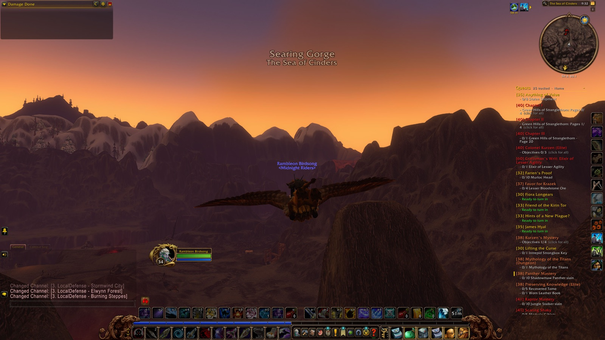
9:32 PM — Entered Searing Gorge- 9:32 PM — Entered The Cauldron (Searing Gorge)
- 9:33 PM — Entered Searing Gorge
- 9:33 PM — Entered Firewatch Ridge (Searing Gorge)
- 9:33 PM — Entered Searing Gorge
- 9:33 PM — Entered Dun Morogh
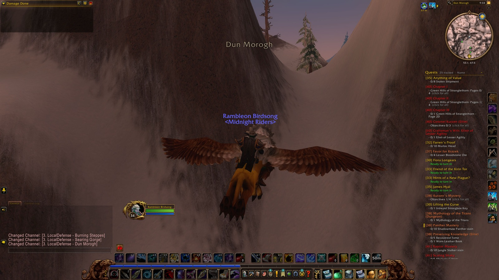
9:33 PM — Entered Dun Morogh- 9:33 PM — Entered The Tundrid Hills (Dun Morogh)
- 9:33 PM — Entered Dun Morogh
- 9:33 PM — Entered Kharanos (Dun Morogh)
- 9:34 PM — Entered Dun Morogh
- 9:34 PM — Entered Gates of Ironforge (Dun Morogh)
- 9:34 PM — Entered Ironforge
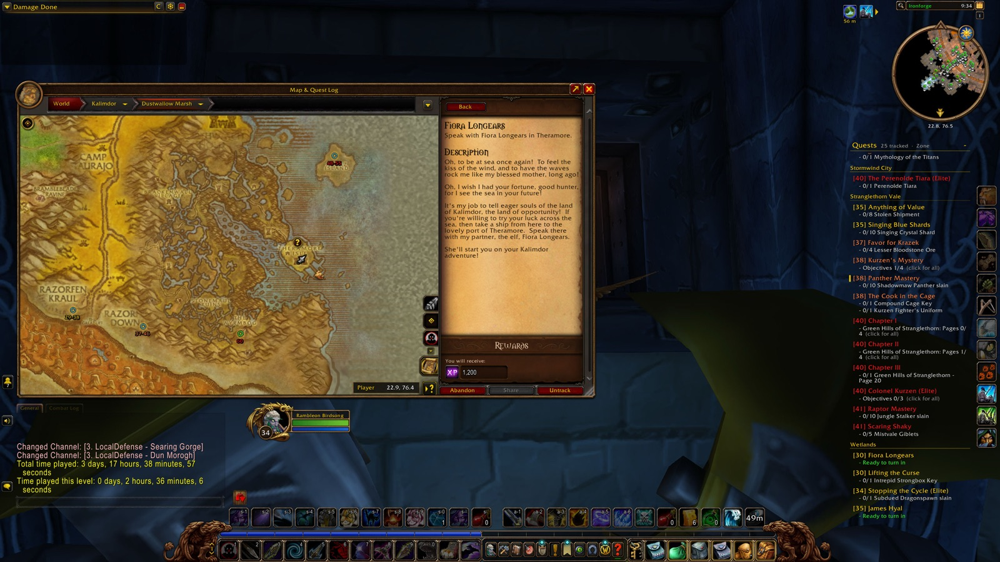
9:34 PM — Entered Ironforge- 9:34 PM — Entered The Great Forge (Ironforge)
- 9:37 PM — Entered Ironforge
- 9:39 PM — Entered Gates of Ironforge (Dun Morogh)
- 9:39 PM — Entered Dun Morogh
- 9:41 PM — Entered Shimmer Ridge (Dun Morogh)
- 9:41 PM — Entered Chill Breeze Valley (Dun Morogh)
- 9:42 PM — Entered Iceflow Lake (Dun Morogh)
- 9:45 PM — Entered Brewnall Village (Dun Morogh)
- 9:46 PM — Entered Gnomeregan (Dun Morogh)
- 9:46 PM — A scene in Gnomeregan, alone (1 line)
- 9:47 PM — Entered Dun Morogh
- 9:48 PM — Entered Iceflow Lake (Dun Morogh)
- 9:49 PM — Entered Chill Breeze Valley (Dun Morogh)
- 9:49 PM — Entered Iceflow Lake (Dun Morogh)
- 9:49 PM — Entered Shimmer Ridge (Dun Morogh)
- 9:50 PM — Entered Chill Breeze Valley (Dun Morogh)
- 9:51 PM — Looted Pyrite (Uncommon)
- 9:51 PM — Looted Tigerseye (Uncommon)
- 9:52 PM — Looted Tigerseye (Uncommon)
- 9:52 PM — Entered Dun Morogh
- 9:53 PM — Entered Coldridge Pass (Dun Morogh)
- 9:53 PM — Discovered Coldridge Pass
- 9:53 PM — Discovered Coldridge Pass
- 9:53 PM — Entered Dun Morogh
- 9:58 PM — Discovered The Grizzled Den
- 9:58 PM — Discovered The Grizzled Den
- 9:58 PM — Entered The Grizzled Den (Dun Morogh)
- 9:58 PM — Looted Malachite (Uncommon)
- 9:59 PM — Entered Kharanos (Dun Morogh)
- 10:00 PM — Entered Dun Morogh
- 10:02 PM — Entered Kharanos (Dun Morogh)
- 10:03 PM — Entered Dun Morogh
- 10:05 PM — Entered Iceflow Lake (Dun Morogh)
- 10:06 PM — Entered Shimmer Ridge (Dun Morogh)
- 10:06 PM — Entered Dun Morogh
- 10:06 PM — Entered Iceflow Lake (Dun Morogh)
- 10:07 PM — Entered Dun Morogh
- 10:08 PM — Entered Shimmer Ridge (Dun Morogh)
- 10:08 PM — Entered Dun Morogh
- 10:08 PM — Entered Shimmer Ridge (Dun Morogh)
- 10:09 PM — Entered Dun Morogh
- 10:09 PM — Entered Iceflow Lake (Dun Morogh)
- 10:09 PM — Entered Shimmer Ridge (Dun Morogh)
- 10:10 PM — Entered Dun Morogh
- 10:13 PM — Entered Gnomeregan (Dun Morogh)
- 10:15 PM — Entered Frostmane Hold (Dun Morogh)
- 10:15 PM — Discovered Frostmane Hold
- 10:15 PM — Discovered Frostmane Hold
- 10:19 PM — Entered Brewnall Village (Dun Morogh)
- 10:19 PM — Entered Frostmane Hold (Dun Morogh)
- 10:19 PM — Entered Dun Morogh
- 10:20 PM — Entered Frostmane Hold (Dun Morogh)
- 10:20 PM — Entered Dun Morogh
- 10:21 PM — Entered The Grizzled Den (Dun Morogh)
- 10:22 PM — Entered Dun Morogh
- 10:22 PM — Entered Kharanos (Dun Morogh)
- 10:22 PM — Entered Dun Morogh
- 10:24 PM — Entered Iceflow Lake (Dun Morogh)
- 10:24 PM — Entered Shimmer Ridge (Dun Morogh)
- 10:26 PM — Entered Dun Morogh
- 10:29 PM — Entered Gates of Ironforge (Dun Morogh)
- 10:30 PM — Entered Ironforge
- 10:31 PM — Entered The Military Ward (Ironforge)
- 10:31 PM — Entered Hall of Arms (Ironforge)
- 10:33 PM — Entered The Military Ward (Ironforge)
- 10:33 PM — Entered The Great Forge (Ironforge)
- 10:34 PM — Learned |cff71d5ff|Hspell:1240962:0|h[Mining]|h|r
- 10:48 PM — Entered Ironforge
- 10:48 PM — Entered Hall of Explorers (Ironforge)
- 10:49 PM — Entered Tinker Town (Ironforge)
- 10:51 PM — Entered The Military Ward (Ironforge)
- 10:51 PM — Entered The Great Forge (Ironforge)
- 11:00 PM — Entered Ironforge
- 11:01 PM — Entered Vault of Ironforge (Ironforge)
- 11:02 PM — Entered Ironforge
- 11:02 PM — Entered The Great Forge (Ironforge)
- 11:05 PM — Entered The Military Ward (Ironforge)
- 11:05 PM — Entered Tinker Town (Ironforge)
- 11:06 PM — Learned |cff71d5ff|Hspell:4037:0|h[Engineering (Journeyman)]|h|r
- 11:06 PM — Learned |cff71d5ff|Hspell:1240958:0|h[Engineering]|h|r
- 11:06 PM — Entered Hall of Explorers (Ironforge)
- 11:07 PM — Entered Ironforge
- 11:07 PM — Entered The Great Forge (Ironforge)
- 11:07 PM — Entered Ironforge
- 11:08 PM — Entered Hall of Explorers (Ironforge)
- 11:08 PM — Entered Tinker Town (Ironforge)
- 11:08 PM — Entered Hall of Explorers (Ironforge)
- 11:08 PM — Entered Ironforge
- 11:08 PM — Entered The Great Forge (Ironforge)
- 11:12 PM — Entered Ironforge
- 11:12 PM — Entered Vault of Ironforge (Ironforge)
- 11:13 PM — Entered Ironforge
- 11:13 PM — Entered The Great Forge (Ironforge)
- 11:14 PM — Entered Ironforge
- 11:14 PM — Entered Hall of Explorers (Ironforge)
- 11:14 PM — Entered Ironforge
- 11:14 PM — Entered The Great Forge (Ironforge)
- 11:15 PM — Entered Ironforge